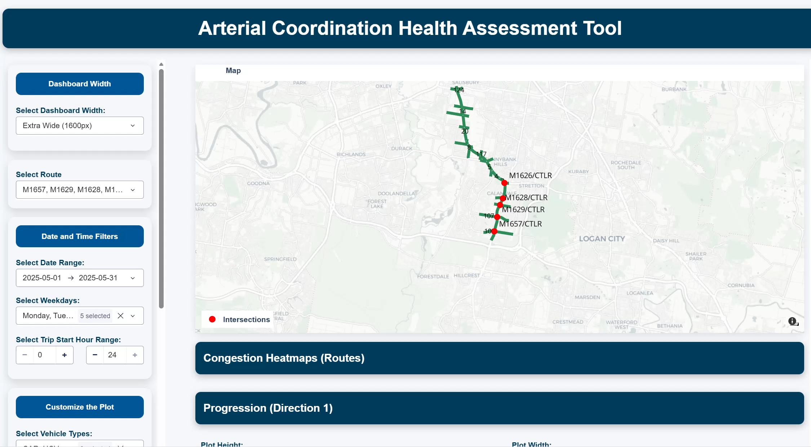
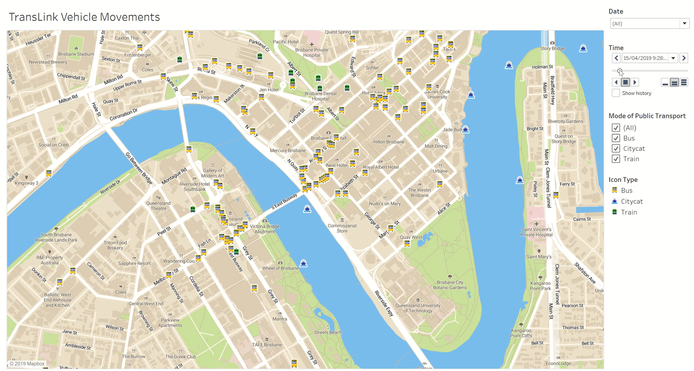
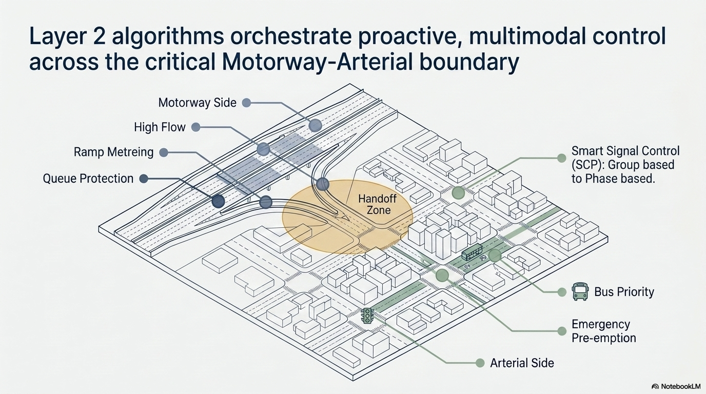
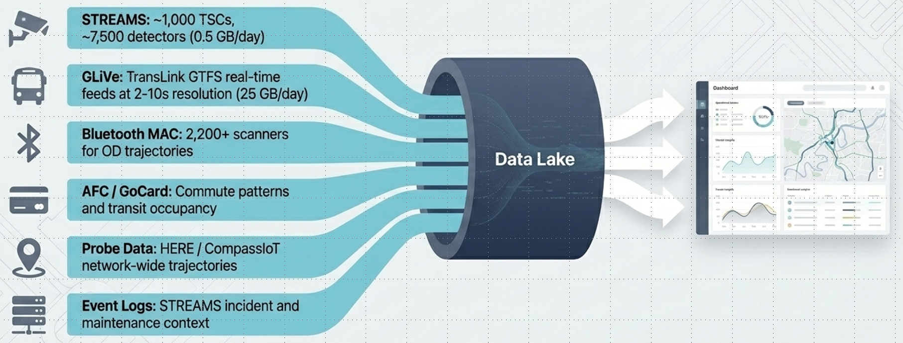

NiFTi
Network Intelligence for Future Transport and Mobility Impacts
ARC Research Hub · QUT
Government and public sector
Smarter Queensland roads.
Research, operations, and public benefit together.
NiFTi brings government, industry, and academia to the same table to build transport intelligence that is grounded in how the network actually works, co-owned from day one, and built to last beyond any single project.
Brisbane network · Queensland transport
Proposed ARC Research Hub · Queensland University of Technology
5+
Tools in Queensland operations
10+
Years partnership research
8
Government and industry partners
2032
Brisbane Olympic readiness
What NiFTi is
What it delivers for Queensland
Tools in operations today

A permanent capability hub for Queensland's transport network.
NiFTi gives Queensland's network operators better tools, better data, and better decision support. It is co-owned from day one: government agencies define the problems and bring operational data; researchers build the tools; industry deploys them. The result is research that sticks in operations, not research that sits on a shelf.
A safer, more responsive network
Weather-responsive VSL triggers speed reductions before conditions deteriorate. Crash-risk modelling turns live data into proactive safety management. Already in development with TMR.
Better information for operators
ANSPA gives operators a clear corridor performance picture: where congestion is building, which routes are performing, what changed since yesterday. Decisions made with data, not guesswork.
Road and public transport together
GLiVe and ANSPA combine road and transit data in a single performance view. Operators see bus and road performance on the same corridor in the same dashboard for the first time.
Preserving decades of operational expertise
InteliAgent captures tacit knowledge of experienced engineers in a queryable digital format, so a junior operator can draw on 30 years of network experience even after those engineers retire.

ANSPA

GLiVe
InteliAgent

Control layer

Connected data foundation — multimodal feeds into one operational picture
How the partnership works
Current partners
Three partners. One shared table. Co-owned from day one.
Government
Defines problems, provides operational data. Agencies bring the real network problems and the data to test solutions against.
University
Research depth and talent pipeline. QUT researchers and PhD students bring rigour and the next generation of transport engineers.
Industry
The innovation approach
Bridges research and deployment. Deployment infrastructure and a pathway from research prototype to live network operation.
Research designed to reach operations, not stop at publication.
1
Define the problem together
Government operators and researchers co-define the problem and what a good outcome looks like before any research begins.
2
Research and test on real sites
Solutions are developed and tested on real Queensland infrastructure or operational datasets.
3
Honest evaluation
If something does not work, that finding is reported and learned from. Rigour is non-negotiable.
4
Move what works into operations
The path from research to deployment is planned from day one. What the hub builds is built to run on the network.
Brisbane 2032
The stress test for Queensland transport.
The Olympics will put the network under globally visible, concentrated demand. NiFTi is building the tools and capability that make 2032 manageable and that will continue delivering for Queensland commuters long after the Games.
Queensland TMR
Brisbane City Council
TransLink
Transmax
iMOVE CRC
Main Roads WA
Aimsun
Discuss partnership with NiFTi.
Government agencies, public bodies, and policy organisations are welcome to explore partnership and collaboration with the hub.
ashish.bhaskar@qut.edu.au